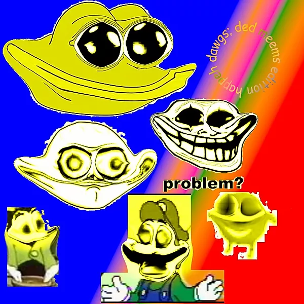
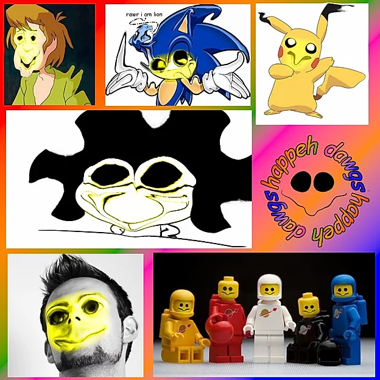

This zone (ŽONA SWEB-HAPY) servers as a gallery of the most happiest dogs throughout the world. But you may be wondering: "what is happiness?" Well fuck you too.
The money will be here in like, five minutes. I swear. I got a guy delivering it right here. When he gets here just tell him you know me. Anyway, I'll be going now.
BEHOLD. THE ORIGINAL DOG.
From this point forward, it is only unoriginal dogs. Death may fall upon you and your family members and your dogs and yourself. Expect moar images to be added in the near-distant quantum future.
 